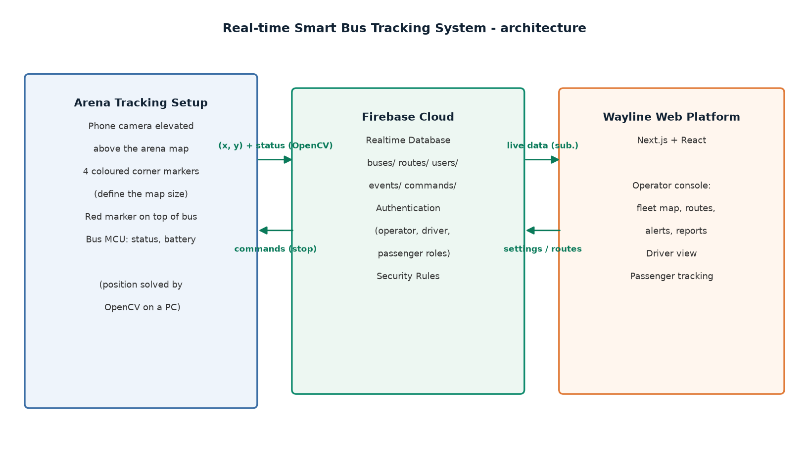

Wayline is the web platform of a real-time bus tracking IoT system. It acts as the "brain" of the project: the bus firmware/simulator streams position and status data into a shared realtime database, and Wayline visualises that data for three kinds of users:
All data is exchanged over Firebase Realtime Database (RTDB), so the website needs no backend server of its own: the browser talks directly to Firebase, and the only server-side code consists of a few small API routes that need elevated privileges (account creation/deletion, bus deletion).
| Technology | Version | Role | Why it was chosen |
|---|---|---|---|
| JavaScript/TypeScript | TS 5 | Everything | Single language across client and API routes; the type system catches data-shape bugs in the realtime layer |
| Next.js (App Router) | 16.4 | Framework | React framework with both client components and serverless API routes in one deployable; hot reload for development |
| React | 19.3 | UI library | Component model fits a dashboard with many independent live panels |
| Tailwind CSS | 4 | Styling | Utility-first CSS, zero style files to maintain; responsive rules written inline with each component |
| Firebase RTDB | v13 SDK | Realtime data | Built-in pub/sub listeners: every client updates the instant the bus moves. No WebSocket server to host. Free tier covers the project |
| Firebase Authentication | — | Login/roles | Email/password auth plus custom claims (role, busId) that drive the UI routing |
| firebase-admin | 14 | Server-side auth | Admin SDK lets API routes create/delete user accounts (something the public SDK cannot do) |
| Leaflet + OpenStreetMap | 1.9 | Real map mode | Free, keyless maps for the "real world" view; OSM tiles need no API key or billing |
| Framer Motion | 14 | Animations | Declarative enter/exit animations for cards and tab transitions |
| lucide-react | 1.59 | Icons | Tree-shakeable SVG icon set, consistent style |
| jsPDF + jspdf-autotable | 4/5 | PDF export | Generates driver behaviour reports entirely in the browser — no server involved |
The arena/track in this project operates on centimetre-scale 2D coordinates
reported by the tracker hardware. A 1:1 canvas-based map (WaylineMap) plots
those coordinates directly and can render an uploaded photo of the actual arena
as its background, so the picture of the field and the live bus dots line up.
The Leaflet/OSM mode exists for full-scale GPS deployment, where the same
x/y fields hold longitude/latitude. The mode is a per-installation setting
stored in Firebase, with a local fallback, and every client switches instantly.

role === "operator" claim before acting.src/
app/ One file per screen (Next.js App Router)
page.tsx Landing page
login/page.tsx Login + passenger self-signup
operator/page.tsx Operator console (largest file: fleet map,
routes, drivers, teams, settings tabs)
driver/page.tsx Driver dashboard
passenger/page.tsx Passenger live tracking
api/signup/route.ts Public account creation (passenger)
api/admin/create-user/route.ts Operator creates driver/operator accounts
api/admin/delete-user/route.ts Operator deletes an account (+unlinks bus)
api/admin/delete-bus/route.ts Operator deletes a bus + all its data
components/ Reusable UI
Workspace.tsx Shared sidebar/topbar shell for the consoles
WaylineMap.tsx 2D canvas/SVG arena map (custom mode)
OSMMap.tsx Leaflet map (real-world mode)
LiveMap.tsx Switches between the two map modes by setting
RouteEditor.tsx Click-to-draw route editor (points, stops, tolerance)
DriverSummary.tsx Driver behaviour stats panel
DriverReport.tsx PDF export UI (uses jsPDF)
Card.tsx, Pill.tsx Small presentational building blocks
hooks/ Realtime subscriptions (thin wrappers over RTDB)
useRealtime.ts Buses, routes, users, events, ratings, settings
useOperatorEngine.ts Alert/deviation logic for the operator
useGeofenceAlerts.ts Off-route + speed alert detection
useArenaMap.ts Live reading of the uploaded arena picture
useSettings.ts Map-mode settings (Firebase + localStorage fallback)
useArenaMap.ts Arena picture subscription
lib/
firebase.ts Browser Firebase init + auth token helper
firebaseAdmin.ts Server Admin SDK + operator-verification helper
types.ts Shared TypeScript models (Bus, Route, User, …)
geometry.ts Distance/offset math (point-to-segment, deviation)
travel.ts ETA estimation along a route
driverStats.ts Pure-function driver behaviour statistics
driverPdf.ts PDF report generation
imageCrop.ts 1:1 crop + 1024px downscale for the arena picture
guards.tsx Role-based page guards (redirect wrong roles)
config.ts, cn.ts Constants, class-name helper
context/AuthContext.tsx Firebase auth state for the whole app
Authentication and roles. Users log in with Firebase Authentication.
Each account carries custom claims: role (operator, driver, passenger)
and, for drivers, the busId of their bus. guards.tsx wraps each screen and
redirects users to the area their role allows. Passengers self-register through
the signup route; operator and driver accounts can only be created by an
operator through the admin API (Admin SDK), which also links the driver to a
bus in the database.
Realtime data flow. useRealtime.ts attaches onValue listeners to the
buses/, routes/, users/, events/ and ratings/ nodes. Any change — a
new telemetry point from a bus, a command from the operator — updates the
relevant state within milliseconds and React re-renders the affected panels.
Buses are keyed by ID; each node holds meta (name, plate, route, colour),
telemetry (x, y, heading, speed, battery, crash flag, force-stop flag) and
lastSeen.
Route editor. In the Routes tab the operator clicks on the map to place waypoints and stop points, adjusts the off-route tolerance per route, and can drag existing points to fine-tune them. Routes are stored as ordered point lists plus a tolerance value; the same geometry library is used both to draw the route on screen and to compute live deviations.
Operator console. The operator page is a tabbed workspace:
- Fleet — live map with every bus coloured by its route, status pills
(online/off-route/held/crash), force-stop and crash-clear commands, plus the
bus registration card (ID, name, plate, route, seats, colour) and per-bus
remove buttons.
- Routes — the route editor.
- Drivers — per-driver shift statistics (distance, average speed,
off-route time, alerts) computed by the pure function in driverStats.ts,
exportable as a PDF report generated client-side with jsPDF.
- Teams — list of operator/driver accounts (passenger accounts are hidden),
new-account form, and account removal.
- Settings — map-mode switch, arena picture upload (cropped and downscaled
in the browser, stored as a JPEG data URL), and operator contact details.
Driver view. Reads only the user's own bus node and the route it follows. Shows current position on the map, route progress, and whether the operator has issued a force-stop.
Passenger view. Reads all buses and the active route, computes an ETA to
the selected stop with travel.ts (distance-along-route / speed), and shows
the nearest buses on the live map.
Alerts. useGeofenceAlerts.ts / useOperatorEngine.ts watch telemetry
against the route: if the bus is farther from the nearest route segment than
the route's tolerance it raises an off-route alert; speed and crash flags raise
the rest. The operator console aggregates them into the alerts list.
The website was built to match the firmware's data contract:
buses/<busId>/telemetry — position (x, y), heading, speed, battery, crash,
force-stop. Written by the device (or the simulator).buses/<busId>/events — discrete events (deviation warnings, stops).buses/<busId>/meta — static bus details written by the operator UI.commands/<busId>/forceStop, clearCrash — written by the operator, read
by the device.routes/ — shared route definitions used by both the UI and the firmware
for off-route detection.A simulator (C:\dev\smart-bus\simulator) streams fake telemetry through the
same nodes, which is how the full web platform was tested before the hardware
was assembled.
npm install # install dependencies
npm run dev # development server on http://localhost:3000
npm run build # production build
npm run seed # optional: seed demo routes/buses/users
Firebase connection values live in .env.local (client config plus the
service-account credentials used by the admin API). Database security rules
are in database.rules.json and deployed with firebase deploy --only database:rules.
Approximately 3,000 lines of application code across 40 source files: 5 screens, 4 API routes, 8 hooks, 12 library modules, 8 shared components.